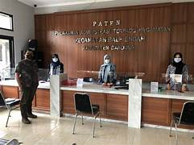

Layanan Desa
Desa kami menyediakan layanan administrasi, informasi publik, pengaduan warga, serta bantuan sosial secara cepat, mudah, dan transparan.

Pelayanan Administrasi
Kami menyediakan berbagai layanan administrasi seperti surat keterangan domisili, pengantar nikah, dan dokumen lainnya untuk memudahkan warga dalam pengurusan keperluan administrasi secara cepat dan efisien.
Pengaduan dan Saran Warga
Warga dapat menyampaikan keluhan, masukan, atau laporan langsung melalui fitur pengaduan online untuk mendukung transparansi dan meningkatkan kualitas pelayanan publik di lingkungan desa kami..

Informasi dan Berita terkini
Website ini menyajikan berbagai informasi terbaru seperti kegiatan desa, pengumuman penting, musyawarah warga, dan jadwal pelayanan yang dapat diakses kapan saja oleh seluruh masyarakat secara terbuka dan akurat..